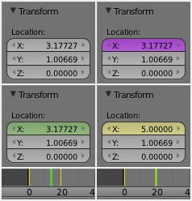

简介–毛货翻译¶
动画指的是体的位移、形状随着时间的变化而变化，物体产生动画的方式多种多样:
- 作为一个整体物体移动
适时改变物体的位置, 方向或大小;
- 形变动画
通过物体的点或控制点来产生动画;
- 继承类动画
使一个物体随着另一个物体的移动而移动 (如父物体, 挂勾, 骨骼等...)。
In this chapter, we will cover the first two, but the basics given here are actually vital for understanding the following chapters as well.
Animation is typically achieved with the use of keyframes.
章节¶
Animation Fundamentals¶
- Actions
动作是用来记录物体动画及属性的。
- Drivers
- Drivers are scripts used to control and animate properties.
- Keying Sets
插帧集是用来记录同一时间点对应的一组属性值的。
- Markers
标签用于在一个动画内标记关键点/事件的。
- Motion Paths
运动路径是对动画的一种可视化表达。
- Shape Keys
形变关键帧可使物体在新的关键帧时产生形变。
动画编辑器¶
- 时间线
时间线编辑器是一个用来控制和设置时间关键帧的快捷窗口，而且附带了一些动画工具。
- Graph Editor
曲线编辑器最常用于编辑函数曲线和通道及驱动关键帧。
- Dope Sheet
动画摄影表内包含了许多动画编辑器。
- NLA Editor
NLA编辑器用于编辑动作，或将他们合成在一起。
State Colors¶

State colors of properties.
Properties have different colors and menu items for different states.
| Gray | Default |
| Yellow | Keyframes |
| Green | Animated |
| Purple | Driver |